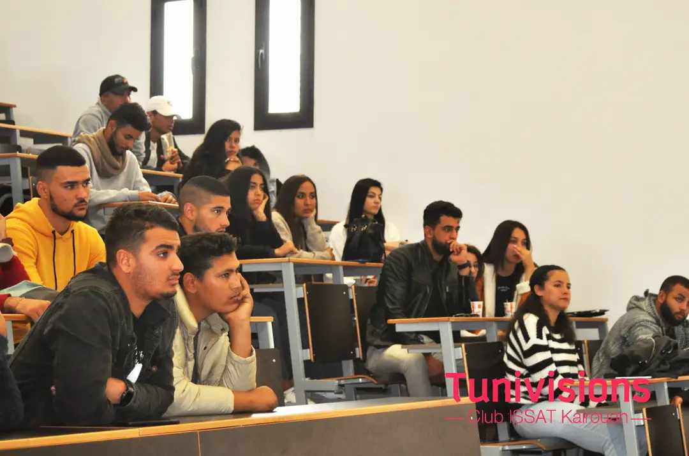
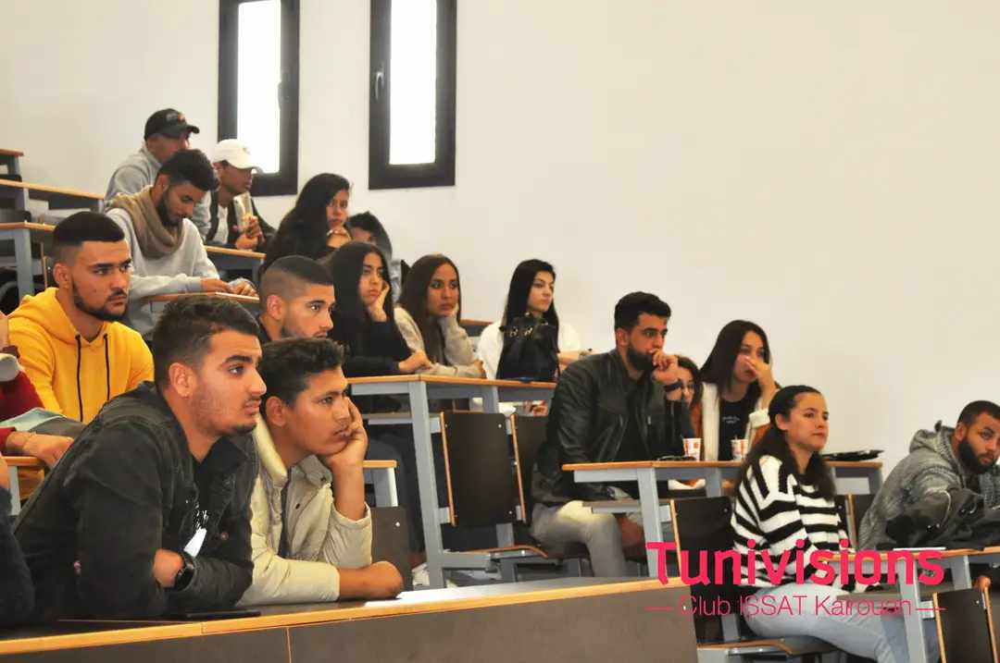

Club Tunivisions
Période : 2021-2022
Mon expérience au sein de Tunivisions a été extrêmement enrichissante. Elle m’a non seulement permis de développer des compétences techniques et organisationnelles, mais aussi de mieux comprendre les enjeux liés à la communication audiovisuelle et à la gestion d'événements. Cela m’a permis de m'intégrer à une communauté dynamique et de renforcer mon réseau professionnel, tout en me donnant des bases solides pour mes futurs projets.
.jpg) 

Club du Chant
Période : 2024-2025
Mon expérience au sein du Club du Chant a été incroyablement enrichissante. En tant que membre, j’ai eu l’opportunité de développer mes compétences vocales tout en apprenant à travailler en équipe pour organiser et participer à des événements musicaux. Cette expérience m’a permis de découvrir des techniques de chant avancées et de participer à des spectacles en live, renforçant ainsi mes capacités de communication et de performance sur scène. Elle a été très positive et m’a ouvert de nouvelles perspectives pour mes futurs projets musicaux.